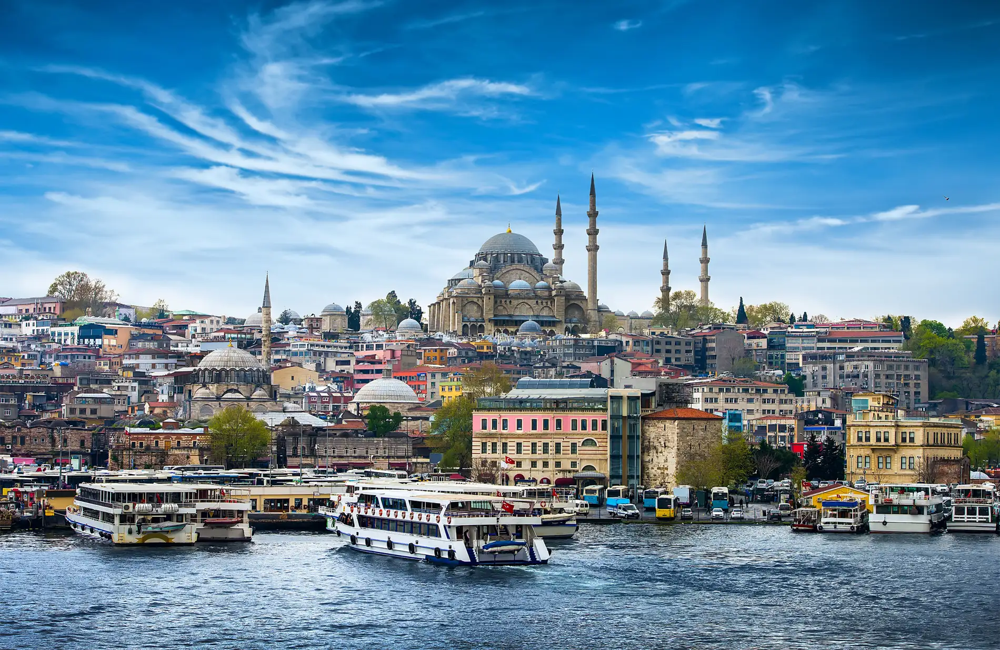
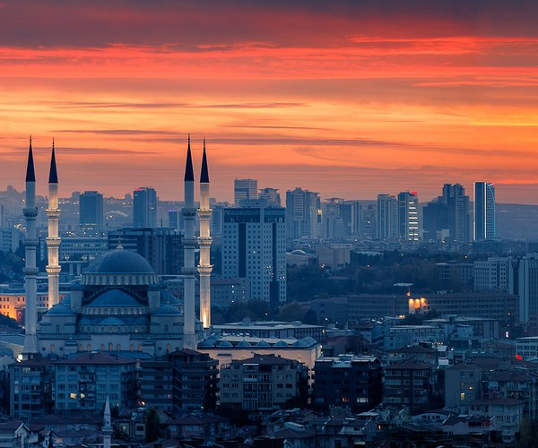

Bienvenido a Turquía
Explora su riqueza histórica, cultural y paisajes únicos.
Una Nación entre Continentes
Turquía se encuentra estratégicamente ubicada entre Europa y Asia, lo que le confiere una mezcla única de culturas e influencias. Este país, con una historia que abarca milenios, es hogar de maravillas arquitectónicas como Santa Sofía y la Biblioteca de Celso. Además, su gastronomía es reconocida mundialmente, con delicias como el kebab, el baklava y el té turco.
Turquía también es conocida por sus paisajes variados: desde las playas del mar Mediterráneo hasta los paisajes rocosos de Capadocia. Es un destino para exploradores, amantes de la historia y de la naturaleza.

Estambul
La ciudad más grande de Turquía, famosa por su historia, el Bósforo y lugares icónicos como Santa Sofía y la Mezquita Azul.

Ankara
La capital de Turquía, conocida por su papel político y cultural, con monumentos como el Mausoleo de Atatürk.

Capadocia
Una región famosa por sus paisajes únicos, ciudades subterráneas y paseos en globo aerostático.
Datos Curiosos de Turquía
- Producción de avellanas: Turquía es el mayor productor de avellanas del mundo.
- Monte Ararat: Es el hogar del Monte Ararat, que según la Biblia es el lugar donde descansó el Arca de Noé.
- Origen del tulipán: El tulipán, asociado comúnmente con los Países Bajos, tiene sus raíces en Turquía.
- San Nicolás: Santa Claus (San Nicolás) nació en Patara, una región de Turquía.
- Conversión de moneda: La moneda local de Turquía es la lira turca (TRY). Actualmente, 1 dólar estadounidense equivale aproximadamente a 27 liras turcas, dependiendo de la tasa de cambio.
- Gobierno: Turquía ha tenido una forma de gobierno republicana desde 1923, cuando Mustafa Kemal Atatürk fundó la República de Turquía, transformando el antiguo Imperio Otomano.
Integrantes del Grupo
1. Brandom Gamaliel Sánchez Guevara
2. Brayan Audiel Chavarría Romero
3. Francisco Javier Hernández Aguirre
4. Yohana Lisbeth Salvador López